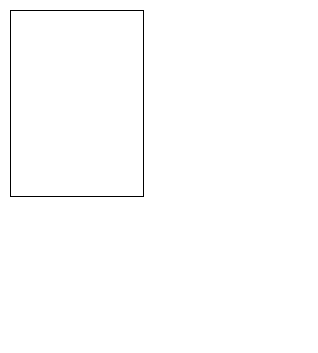

All Posts
-
 Wifi Whisperer
Wifi Whisperer Site and logo design for artist Kyle McDonald's installation at Moogfest. Wifi Whisperer collected data from thousands of devices: what kind of device, what networks they've been connected to, which websites they visit, even the remaining battery life.
Read More
-
 Humans of Simulated New York
Humans of Simulated New York Completed at DBRS Innovation Labs, HOSNY is a participative agent-based simulation built to speculate alternative economies. It asks how world-building as interactive gameplay creates the opportunity for a better and more complete understanding of the complex relationships that make up the systems of our world.
Read More
-  New Mercy Park
Web-based narrative that is part alternate reality game, part poetry, and part software tutorial, resulting in an experience that spans months and takes place across chat boxes, emails, and other internet platforms.
Read More
-
 TRYTOBEGOOD on Bel-Air
TRYTOBEGOOD on Bel-Air Fei does radio.
Read More